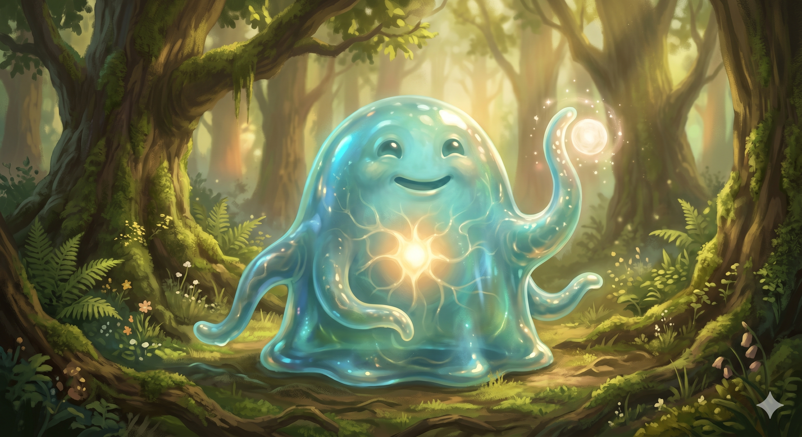

Appears in: Couch Potato Chaos, Couch Potato Crisis
Profile

-
Appears in: Couch Potato Chaos, Couch Potato Crisis
-
Aliases: Slimon
-
Cross-book continuity: Appears in both books.
-
Species: Slime
-
Class: Paladin
-
Role: Knight of the realm of Questgivria, party healer, and Kiwi’s romantic partner
-
Personality: Sir Slimon is defined by quiet steadiness and unwavering devotion. As a slime, he cannot vocalize human speech — he communicates through a language of “pffpt” sounds and expressive body language that those who know him can read fluently. Despite this limitation, he conveys more emotional range than many speaking characters: eagerness (“Pffpt!” he said boisterously, shaking Tasha’s hand with an outstretched tentacle), adamant support (“Pfffpt!” agreed Sir Slimon adamantly, when Tasha was being dragged to trial), protest (“Pfffpt!” Slimon protested, when Gelkorus was mentioned), agreement (“Pffppt!” Slimon indicated his agreement), and gentle care (catching falling allies with tentacles and lowering them softly to the ground). He is the emotional anchor of his friend group — the one who “always said the right thing to make her feel better” as Kiwi remembers from their childhood. His paladin devotion manifests as selfless protectiveness: he healed through the G-Rex battle as fast as he could, grabbed Hermes with tentacles to drag the rage-debuffed dwarf to safety, and cast Reflect on the Jabberwock to neutralise its Rage ability. He is unassumingly brave, content to remain in the backline healing while others take the glory, yet always present when the moment demands physical courage.
-
Backstory: Slimon grew up in the slime kingdom, an ally nation of Questgivria. As a young slime, he met and befriended Princess Kiwistafel, [Prince Hermes](./character-prince-hermes.html), and the young steam dragon Kaze — the four became close childhood friends. Kiwi remembers him as “the funny slime in town who’d played with her when she was younger,” recalling their tickle fights and how he always knew how to comfort her. Over the decades of Kiwi’s elven adolescence, their friendship deepened into love. Slimon asked King Iolo for Kiwi’s hand in marriage — a proposal that was actually Kiwi’s idea; they had been discussing marriage for years. Iolo opposed the match on biological grounds: slimes reproduce by splitting their bodies to create children, and the parent is consumed in the process. Iolo warned Kiwi that one day Slimon would “tire of this world” and the love between them would die when his reproductive instinct overcame his will. Kiwi refused to accept this, insisting that Slimon had promised to stay with her forever. Iolo offered a compromise: if Kiwi could find some way to bear Slimon’s child — a spell or artifact — he would allow the marriage, giving them decades (by elven reckoning) to search for a solution. Slimon’s decision to resist his species’ biological imperative for the sake of love is the defining choice of his life. He was later recommended for knighthood by Kiwi herself and, despite Iolo’s initial doubts, proved himself worthy of the title through loyal service and battlefield valor.
-
Significant story events:
- Chapter 12 — Ninja Attack (Chaos): Sir Slimon was travelling with Kiwi and Hermes when they were ambushed by over forty Human Ninja. He and Hermes fought to protect Kiwi, killing several before being overwhelmed and killed themselves. They respawned at the castle save point and immediately reported the kidnapping to King Iolo, who set up dragon patrols to contain the kidnappers. The scene establishes Slimon’s willingness to die for Kiwi — and that dying for her is something he has already done.
- Chapter 17 — Honor Among Thieves (Chaos): Slimon meets Tasha in the jail cell area. He communicates his suggestion — to return to the area where Kiwi was taken — via “pffpt” sounds that Hermes translates. When Tasha is bewildered by his speech, Ari explains the nature of slime communication. This is the reader’s introduction to how Slimon’s language works.
- Chapter 18 — Princess Rescue (Chaos): Slimon participates in the four-pronged assault on the ninja watchtower, approaching from the north with Hermes. During the G-Rex battle that follows, he casts recovery spells as fast as he can to keep the party alive against a vastly outlevelled foe. When Tasha kills the G-Rex from inside its throat and begins falling from a great height, Slimon shoots out a tentacle and catches her, gently lowering her to the ground — then does the same for Kiwi. Kiwi embraces him fondly: “Sir Slimon, you came to rescue me… I knew you would.” After the battle, Slimon hops up to Kiwi and returns her oaken staff to her. Kiwi gives him a goodbye kiss before returning to the palace.
- Chapter 19 — Turnabout Identity (Chaos): When Tasha is rearrested and taken to the courthouse, Slimon adamantly insists on accompanying her — “Pfffpt!” agreed Sir Slimon adamantly. He sits in the stands with Hermes, sharing popcorn during the trial.
- Chapter 34 — Rumble on the Belcross Express (Chaos): Slimon fights alongside Tasha, Ari, Pan, and Henimaru through ninja-infested train cars.
- Chapter 1 — Couch Potato Crisis (Crisis): Reintroduced as the party’s principal healer. The text describes his anatomy in detail: “A small glowing core that comprised his nervous system lay within the large blob of mucus that was his body — though he could manipulate the mucus to move and perform actions. Like all slimes, he fought using tentacles and equipped no weapons or armor. The only healer of the group, he remained in the back with Pan.”
- Jabberwock Battle (Crisis): Slimon plays a critical tactical role. He casts Reflect on the Jabberwock at Ari’s command, preventing it from casting Rage on itself — the reflected spell hits Hermes instead. When Hermes is immobilised by the rage debuff and cannot flee an incoming area attack, Slimon grabs the dwarf with two outstretched tentacles and drags him to cover beneath an outcropping. Throughout the fight, he heals allies with recovery magic whenever health drops too low. He also pummels the Jabberwock directly with tentacles, though dealing only nominal damage.
- War Council at Brightwind (Crisis): Present at the council where the rescue mission to save Kiwi from Zhakara is planned. He insists on joining: “Pfffpt!” When Hermes says “If Slimon is coming, so am I,” it confirms that Hermes considers Slimon inseparable from the mission.
- Sea Voyage and Wombat Island (Crisis): Travels with the party aboard the gnome ship. He and Kegan chat amicably on deck, and he whines (“Pffpt”) at the prospect of being served gnome’s gruel. He’s short enough to walk below decks without issue — a practical advantage of being a slime.
- Assault on Zhakara / Final Battle (Crisis): Fights throughout the Zhakaran campaign. In the battle against the giant tentacle creature, he attacks it with tentacles of his own, though the size difference renders his attacks ineffective. After the climactic battle, he approaches Tasha and Pan’s group hug, casts an area-of-effect heal on their wounds, and wraps his tentacles around the group — a character beat that encapsulates his role as the party’s emotional and physical healer.
-
Notable Quotes/Moments: (As a slime, Slimon cannot speak human words. His most significant moments are described as actions rather than dialogue.)
“Pffpt,” he said boisterously. (Produces a tentacle and shakes Tasha’s hand.) — Chapter 17, Honor Among Thieves (Chaos). Slimon’s introduction to Tasha, extending a tentacle in friendship. The gesture communicates warmth and openness that words couldn’t improve upon.
“Pfffpt!” agreed Sir Slimon adamantly. — Chapter 18, Princess Rescue (Chaos). When Tasha is being dragged to trial by city guards, Slimon’s adamant agreement with Ari’s insistence on accompanying her shows his loyalty extends beyond Kiwi to the entire party.
A tentacle shot forth from Sir Slimon, catching her and gently lowering her to the ground. Another tentacle lowered [Princess Kiwi](./character-princess-kiwistafel-questgiver.html) to the ground beside her. — Chapter 18, Princess Rescue (Chaos). After Tasha kills the G-Rex from inside its throat and falls from a great height, Slimon’s instinctive catch — and his simultaneous rescue of Kiwi — is his most heroic physical moment. No spell or weapon, just a tentacle and perfect reflexes.
Slimon approached and cast an area of effect spell which healed Tasha’s and Pan’s wounds. Seeing the group hug, he joined in, wrapping his tentacles around the group. — Crisis, late chapter. After a harrowing battle, Slimon heals the group and then physically embraces everyone. The moment captures his dual identity as healer and friend — the party member who mends both bodies and spirits.
-
Physical description: Sir Slimon is a large blob of translucent, mucus-like substance — the body of a sentient slime. Within the blob, a small glowing core is visible, comprising his nervous system. He can manipulate the mucus to move, form tentacles for combat and interaction, and perform complex actions. He equips no weapons or armor — all slimes fight using tentacles alone. He communicates emotion through the movement and posture of his body: he can stick out his tongue to make “pffpt” sounds, extend tentacles to shake hands or embrace, and manipulate his form to express eagerness, protest, or affection. He is short enough to walk below decks on a gnome ship without issue, suggesting a height of roughly three to four feet. His paladin class is expressed through his healing magic rather than through equipment.
-
Relationships:
- Princess Kiwistafel Questgiver (romantic partner): The central relationship of Slimon’s life. They grew up together as childhood friends in Brightwind, playing tickle fights and adventuring together. Their love is mutual, devoted, and biologically complicated — King Iolo forbids their marriage unless Kiwi can find a way to bear Slimon’s child, since slimes die when they reproduce. Slimon has promised to resist his species’ reproductive instinct and stay with Kiwi forever. She calls him “my love” and embraces him openly. His willingness to die for her is established in the very first scene where they appear together.
- [Prince Hermes](./character-prince-hermes.html) (best friend, brother-in-arms): Childhood friends and constant companions. They travel together, fight together, and share a bond so close that Hermes declares “If Slimon is coming, so am I” when the rescue mission is proposed. They share popcorn at Tasha’s trial. Hermes is Slimon’s most frequent translator, rendering “pffpt” into English for the rest of the party.
- Kaze (childhood friend): The young steam dragon who is a close childhood friend of both Hermes and Slimon. The three grew up together and remain inseparable.
- [King [Iolo Questgiver](./character-iolo-questgiver.html)](./character-iolo-questgiver.html) (liege, prospective father-in-law): Their relationship is complicated by Iolo’s opposition to the marriage. Iolo acknowledges Slimon’s worth as a knight — “he’s more than proven himself to be a worthy addition” — but cannot accept the marriage for biological reasons. Slimon serves the king loyally regardless.
- [Tasha Singleton](./character-tasha-singleton.html) (friend, party member): Initially a stranger, they become fast friends after Tasha helps rescue Kiwi. Slimon extends a tentacle to shake her hand boisterously, accompanies her to trial, and fights alongside her through both books. He catches her when she falls from the G-Rex and joins her in a group hug after the final battle.
- Ari and Pan (party members): Reliable allies. Ari translates Slimon’s language for Tasha when they first meet. Slimon heals them in combat and joins Pan in the backline during battles.
- Gelkorus (ancient slime, possible distant relation): When Ari tells the legend of a giant slime that became a monster, Slimon protests — “Pfffpt!” — suggesting either denial, offense, or a complicated relationship with the darker aspects of slime biology.
- Henimaru (fellow party member): Fights alongside him during the Belcross Express battle.
- [General Kegan](./character-general-kegan.html) (ally): They chat amicably aboard the gnome ship during the sea voyage to Wombat Island, suggesting an easy camaraderie.
-
References: Couch Potato Chaos: Chapter 12 - Ninja Attack, Chapter 17 - Honor Among Thieves, Chapter 18 - Princess Rescue, Chapter 19 - Turnabout Identity, Chapter 34 - Rumble on the Belcross Express, Characters | Couch Potato Crisis: Couch Potato Crisis, Freshly Heated Chicken Noodle Soup, Into Zhakara, The End of Zhakara, Sea Dogs